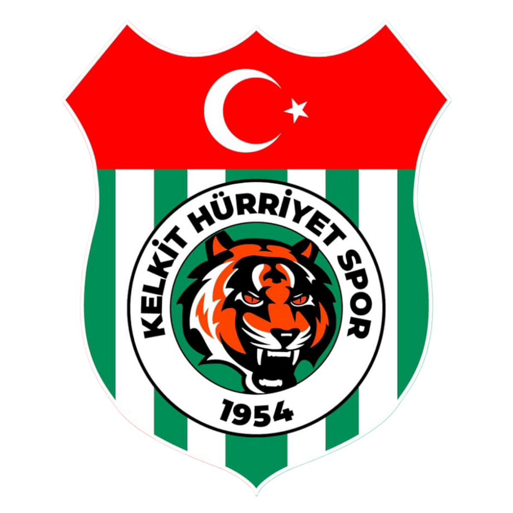

Kelkit Hürriyetspor

Kelkit şehrimizi temsil eden futbol takımı,3.ligde mücadele etmektedir.
Gümüşhane Spor'dan daha köklü bir kulüptür.
Takım Bilgileri
- Kuruluş Yılı: 1954
- Stadyum:Kelkit İlçe Stadyumu
- Lig:3.Lig
- Başarılar:Bölgesel Amatör Lig Şampiyonluğu
Takım Sosyal Medya
Facebook
X
Instagram